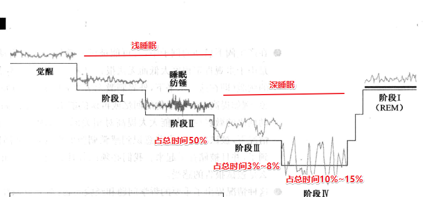

意识状态¶
意识的定义¶
意识：是对环境和认知事件————诸如世界的形象、声音，以及人的记忆、思想、情绪和本体感觉————的觉察。
包括两方面：
- 对环境刺激的觉察
- 对心理事件的觉察
意识的发展史¶
-
19世纪，心理学家开始研究人类意识经验，科学心理学真正出现。
-
20世纪，人类的个人意识几乎成了科学的一个禁区，因为人们很难评价和确认另一个人的经验，也就无法对这些证据进行重复检验。
大多数西方哲学家都是心灵主义者，他们相信意识心灵是一切现实的基础。亚洲哲学家基本也是心灵主义者。
-
当“信息加工”和“认知”成为热门名词，意识这个无法回避的课题，又出现在心理学研究领域中。
作为科学建构的意识¶
把意识表征和无意识表征都当作是被推论出来的建构性概念，这样我们才能把意识看作是一个变量，并据此对意识进行讨论。
Zeman提出四个分类标准，作为构建意识研究框架的一般指导原则：
- 觉醒状态————当我们清醒时，我们可以感知和反应
- 经验————对此时此刻发生在我们周围的事物的觉知
- 拥有一种心理状态————信仰、希望、意图、期望等
- 自我对自我的再认感，自我知识，感到自己对自己头脑中的想法观点和情感拥有所有权
| 与意识有关 | 与无意识有关 |
|---|---|
| 外显认知 | 内隐认知 |
| 瞬时记忆 | 长时记忆 |
| 新异的、提供信息的、显著的刺激 | 常规的、可预知的、不显著的刺激 |
| 注意到的输入 | 未被注意到的输入 |
| 焦点内容 | 边缘事物 |
| 陈述性记忆 | 程序性记忆 |
| 阈上刺激 | 阈下刺激 |
| 有意识加工 | 自发/自动加工 |
| 记得 | 知道 |
| 可获得的信息 | 不可获得的信息 |
| 策略性控制 | 自发控制 |
| 模式化刺激系列 | 内隐习得的结构 |
| 完整的网状结构和髓板内核 | 网状结构和双侧髓板内核损伤 |
| 工作记忆中复述的项目 | 工作记忆中未复述的项目 |
| 觉醒和梦 | 深度睡眠、昏迷、镇静状态 |
| 外显推断 | 自动化推断 |
| 情节记忆 | 语义记忆 |
| 自主理性记忆 | 理性记忆 |
认知心理学和意识¶
-
启动研究
外显记忆：对信息的有意识回忆，有意识地在线索（或问题）与答案之间建立起了联系。
内隐记忆：指在与某些先前经验有关的行为改变中所反映出来的记忆，当先前的信息使人们的行为表现产生易化，并且在回忆时不需要意识努力时（不用费力回想），内隐记忆就能得以显现。
阈下知觉：低于阈限的刺激所引起的行为反应。作用于各种感受器的适宜刺激，必须达到一定的强度才能引起感受。那种刚刚引起感受的最小刺激量，称为绝对感觉阈限。低于绝对阈限的刺激，虽我们感觉不到，但却能引起一定的生理效应。
-
认知神经研究：睡眠和健忘症
-
睡眠：意识和无意识之间最清晰的界限在于人们的清醒状态和睡眠状态之间。
脑电仪（EEG）收集觉醒状态和睡眠状态的脑电波（脑内神经细胞活动时产生的电气性摆动），脑内电波的电压很小，只有百万分之几伏特。
四种基本脑波：
δ波（DELTA/δ wave）：无意识 0.5-3Hz,睡眠Ⅲ期出现
θ波（THETA/θ wave）：潜意识 4-7Hz，存有记忆、知觉和情绪；影响态度、期望、信念、行为；创造力和灵感的来源，深睡作梦、深度冥想时。心灵觉知、个人见识较强、个性强。
α波（ALPHA/α wave）：桥梁意识 8~13Hz，睡眠Ⅰ期出现，临睡前意识逐渐走向模糊；灵感、直觉或点子发挥威力的状态；身心轻松而注意力集中；高度警觉、无暇他顾的状态
β波（BETA/β wave）：显意识 14-30Hz，放松但精神集中；思考、处理接收到外界讯息（听到或想到）；激动、焦虑
γ波（Gamma/γ wave）：专注于模件事 32~100Hz ，提高意识、幸福感、减轻压力、冥想

正常人一般先从非快速眼动睡眠（NREM）开始，在入睡90分钟后进入快眼动睡眠期（REM），REM约持续30分钟，此后NREM期和REM期交替出现，每夜睡眠中反复出现4-5次，每次持续约半小时左右。
非快眼动睡眠NREM(分为4个阶段)总共占整个睡眠期的75％-80％。
快眼动睡眠REM占睡眠期的20％-25％，每夜出现4-6次。
-
健忘症：人类应该存在（至少）两种基本的记忆系统。
-
意识的容量有限：短时记忆容量7±2个单词/数字，当无法复述时，容量降到3~4个
需要意志努力控制的活动只能按照一定序列完成，一次做一个；自动w经的加工过程可以同时进行。多任务并行时，意识控制的任务之间会互相干扰，造成失误和延迟。
-
意识的功能¶
-
定义和设置情境的功能：将所有输入的信息与情境相关联，意识背后的系统对刺激进行定义，并且去除知觉和认知过程中产生的不确定内容。
-
适应和学习的功能
-
排序和通达控制的功能：通过有意识地把一些事物与更高水平的目标相联系，提高它被意识通达的优先级，使它能更经常地被意识到，从而增加成功适应的机会。
-
心理和生理调动和控制的功能
-
决策和执行功能
-
错误检测和编辑功能
-
反射和自我监控功能
-
优化组织性和灵活性的权衡